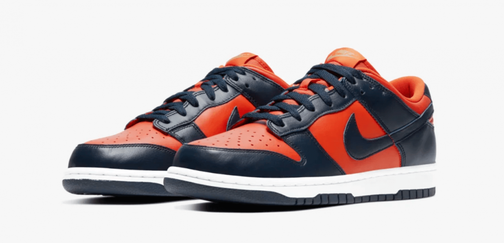
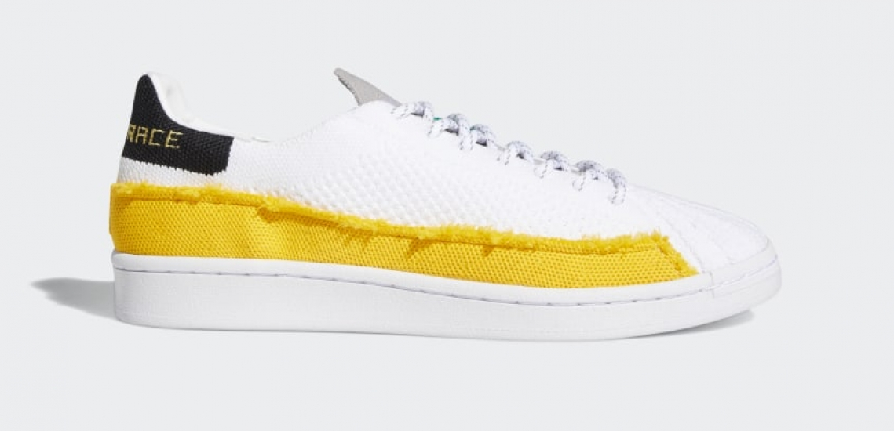
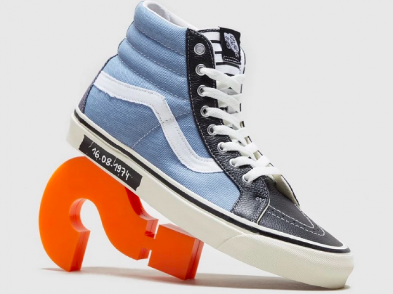
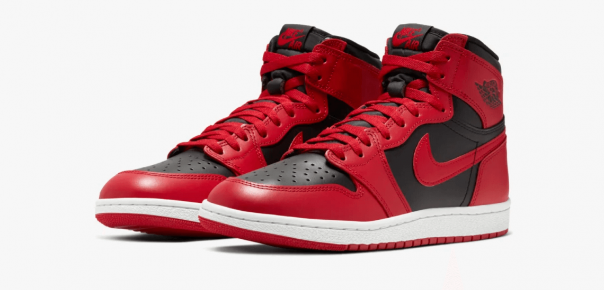

NUEVAS DUNK LOW CHAMP COLORS
El verano 2020 ya está aquí. Después de una primavera muy extraña por culpa de la Covid-19, este veranos todo
el mundo lo espera con muchísimas ganas. Es momento de renovar el armario de zapatillas. Toca salir a la calle
(con mucho cuidado y responsabilidad) a comerse el mundo, disfrutando de los amigos y el buen tiempo. Un buen
outfit es imprescindible. Seguramente Nike ha tenido en cuenta todos estos factores y por eso apuesta por el
color naranja en la nuevas Dunk Low.
¿Sabes que la Dunk Low se vendieron por primera vez el año que Nike también lanzó las míticas Air Jordan 1? 35
años después los dos modelos son un referente de la moda deportiva y urbana. Las Nike Dunk Low hicieron furor en
las canchas universitarias. Ahora se usan mucho menos como zapatillas para la practica del deporte, pero mucho
más como prenda de vestir.

PHARRELL WILLIAMS PONE MÚSICA A LAS ADIDAS SUPERSTAR
Ya te explicamos en Zapatillas y Sneakers que la química que había entre Adidas y Pharrell Williams no era flor
de un día. Y los caminos de ambos se han vuelto a unir para darle un toque diferencial a una de las siluetas más
clásicas de la marca.
Aunque siempre ha mantenido sus particulares líneas maestras, las Adidas Superstar han sabido adaptarse a los
tiempos para mantenerse como uno de los grandes iconos de la cultura street stlye. La varita mágica del
cantante, compositor y productor Pharrell Williams nos trae dos modelos que se escapan de la apariencia habitual
de las Superstar.

PURO TRIBUTO PUNK EN ESTAS VANS EXCLUSIVAS DE SIZE
Sabemos que tienes un gusto exquisito y te encantan los productos exclusivos, por eso nos hemos fijado en estas
Vans que te van a encantar. Igual que el resto de la colección ‘Dawn of punk’, el amanecer del punk, hablamos de
un diseño totalmente melómano, un tributo a una de las bandas que más huella dejaron en el punk y que han
trascendido mucho más allá de la música, siendo parte de la cultura popular. Los Ramones han protagonizo
multitud de prendas, pero en estas Vans llevan todo el protagonismo con diferentes detalles que marcan su
carrera.

AIR JORDAN 1 ’85: NIKE VUELVE A LOS ORÍGENES DEL MITO
Es muy difícil rebatir a cualquier fan de la NBA que Michael Jordan no es el mejor jugador de todos los
tiempos. Hay argumentos para defender este argumento, pero quizá los fans de Lebron, Magic o Kobe podrían llevar
la contraria. En lo que no hay ninguna duda es que Jordan es la persona más influyente de todos los tiempos en
calzado urbano. Michael Jordan, gracias a Nike, es el auténtico rey de la zapatillas. Hoy te presentados una
novedad que no te dejará indiferente y te provocará impulsos incontrolables a comprar.
